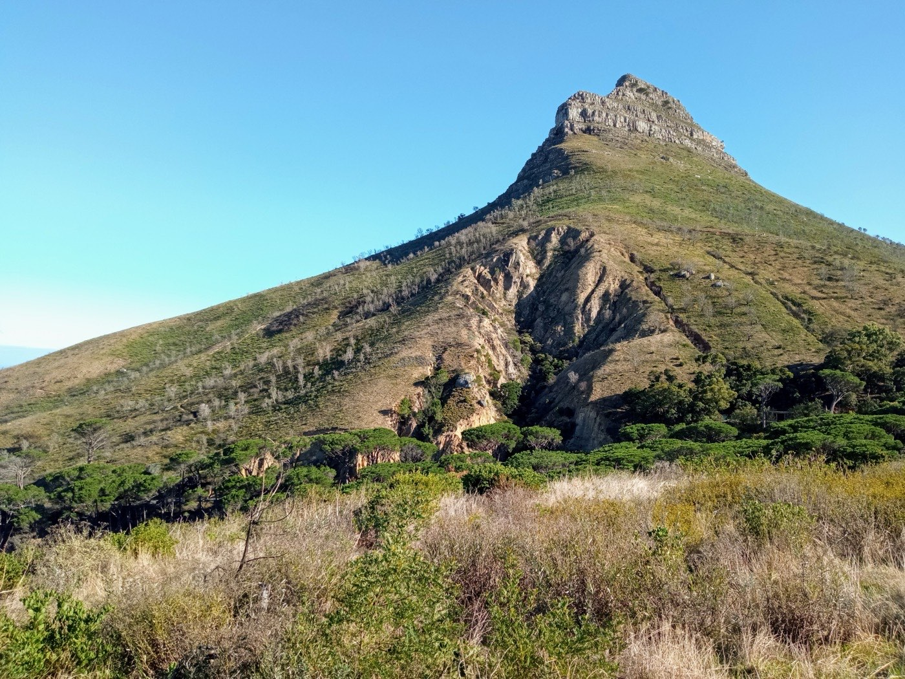

Some brands you buy once and forget. Patagonia is one I keep coming back to — piece after piece, year after year — because it quietly does exactly what I need whether I'm on a plane, on a trail, or just living my normal life in the desert. Over time I've built up a small collection of Patagonia gear that I genuinely reach for constantly, and every item on this list is something I own and wear for real. These are the best, and here's exactly why.
Heads up: this post contains affiliate links. If you buy through them I may earn a small commission at no extra cost to you — and I only recommend gear I actually own and use. See my full disclosure.
Why Patagonia (Beyond the Logo)
Let's get the honest part out of the way: Patagonia is expensive. But it's one of the few brands where I think the premium is genuinely justified, and it comes down to three things. First, the gear lasts — I have pieces that look nearly new after years of hard use. Second, when something does wear out, Patagonia repairs it, often for free, through their Worn Wear program and Ironclad Guarantee; they would rather fix your jacket than sell you a new one. Third, the company actually walks the environmental talk — recycled and Fair Trade materials, and 1% of sales to the planet.
Add it up and the math flips: on a cost-per-wear basis, my Patagonia has been some of the cheapest clothing I own, because I wear it for years instead of replacing it every season. That's the lens I'd use on everything below.
The Layering System
Ninety percent of dressing for travel and the outdoors is layering, and this is the core of mine.
Better Sweater 1/4 Zip
If I could only keep one Patagonia piece, it'd be the Better Sweater 1/4 Zip. It's a fleece with a knit-sweater look, which means it does double duty like nothing else I own: warm and cozy for a cold morning, a chilly flight, or a campsite, but clean enough to wear straight into a dinner or a meeting. It layers perfectly under a shell when the weather turns, and it has held its shape and softness through years of washing. It's the single item I pack for almost every trip.
Torrentshell 3L Rain Jacket
The Torrentshell 3L is the rain jacket I trust to actually keep me dry. It's a genuine 3-layer waterproof-breathable shell — not a flimsy "water-resistant" windbreaker — yet it packs down small enough to live in the bottom of a daypack for the day the forecast lies to you. For travel, that packability is everything: it's insurance against a wet arrival that weighs almost nothing. Pit zips, a proper hood, and Patagonia's durability make it a buy-once rain layer.
Capilene Base Layer (Slim Fit)
Under everything else goes the Capilene Base Layer. This is the unglamorous piece that makes cold days work: a slim, moisture-wicking layer that sits against the skin, moves sweat away, and keeps you warm without bulk. On a cold-morning hike or a winter travel day, it's the difference between comfortable and miserable, and it disappears under a fleece or shell.
Capilene Cool Merino Blend Tee
The Capilene Cool Merino tee is my secret weapon for travel. It blends merino wool with recycled polyester, which gets you merino's best trick — odor resistance — with better durability. In practice, I can wear it hiking, sweat in it, air it out, and wear it again the next day without it smelling. On a carry-on-only trip that means packing fewer shirts and still staying fresh. It's quietly one of the most useful things I own.

This is the kind of terrain the layering system is built for — but it earns its keep on ordinary days too.
Everyday Essentials
Unity Fitz Roy Responsibili-Tee — My Favorite Shirt
I'll say it plainly: the Unity Fitz Responsibili-Tee is one of my favorite shirts, full stop. The Responsibili-Tee fabric is made from recycled cotton and polyester, and it has that perfect broken-in softness from day one, with the iconic Fitz Roy skyline on the front. It's the shirt I grab without thinking — comfortable enough to travel and lounge in, good-looking enough to wear anywhere, and made in a way I feel good about. If you want one piece to try the brand with, make it this.
Funfarer Boardshorts
The Funfarer Boardshorts are my go-anywhere warm-weather shorts. They're built for the water — quick-drying and comfortable straight out of the ocean or a lake — but they look clean enough to wear all day around town after. For beach destinations and summer travel, a single pair of boardshorts that pulls double duty as swimwear and everyday shorts is exactly the kind of do-more-with-less item that keeps my bag light.
Carry & Camp
Atom Sling 8L
The Atom Sling 8L has become my default "grab-and-go" bag, and it's made from recycled materials. Eight liters is the sweet spot — enough for a water bottle, camera, snacks, a packable layer, and the daily essentials, but small enough to sling across your body and forget about. It's my personal item on flights, my day bag exploring a new city, and my everything-bag for a quick hike. The single-strap design means I can swing it around to grab something without taking it off.
MiiR Patagonia Camp Cup (12 oz)
A small thing that brings me an outsized amount of joy: the MiiR Patagonia Camp Cup. It's a 12-ounce insulated stainless cup that keeps coffee hot on a cold morning, survives being tossed in a bag, and turns any campsite, hotel room, or trailhead into a decent coffee spot. MiiR makes genuinely great drinkware and gives back to community projects, so it fits right in with the rest of this list. It's the little ritual object that makes a morning outside feel complete.
Is It Worth the Price?
Here's my honest take after years of buying this stuff: yes, if you buy it the right way. Patagonia isn't clothing you replace every season — it's clothing you buy deliberately, wear constantly, repair when needed, and keep for years. Spread the price over that lifespan and it's a bargain, not a splurge. Buy the pieces that fit your actual life, take care of them, and let Patagonia's repair program handle the rest. That's how something premium ends up being the frugal choice.
Frequently Asked Questions
Is Patagonia worth the price?
For me, yes. It costs more up front, but the gear lasts for years, Patagonia repairs it for free through Worn Wear, it holds strong resale value, and the materials are largely recycled and Fair Trade. On cost-per-wear, it's been some of the cheapest clothing I own.
What's the Better Sweater good for?
It's a do-everything fleece midlayer — warm for cool mornings and flights, clean enough for dinner or a meeting, and it layers under a shell. It's the Patagonia piece I reach for most.
Does Patagonia repair clothing for free?
Largely, yes — through Worn Wear and the Ironclad Guarantee, Patagonia repairs wear-and-tear on its gear, often at no cost, and resells used pieces. It's a big reason the brand earns its premium.
What's the best Patagonia gear for travel?
My travel core is the packable Torrentshell 3L, the Better Sweater fleece, a Capilene Cool Merino tee that resists odor over multiple wears, and the Atom Sling 8L as a day bag — enough to handle almost any climate in a carry-on.
That's the collection — the exact Patagonia pieces I own, pack, and live in. None of it is flashy, and that's the point: it just works, trip after trip, year after year. Buy the ones that fit your life, wear them into the ground, and let them get repaired when they finally earn it. Good gear should disappear into your adventures, and this stuff does.
Image credits: trail runner by Romanterik (CC BY-SA 4.0); mountain trail by Michael Rowe (CC BY-SA 4.0). Representative outdoor images; cropped and resized from the originals.